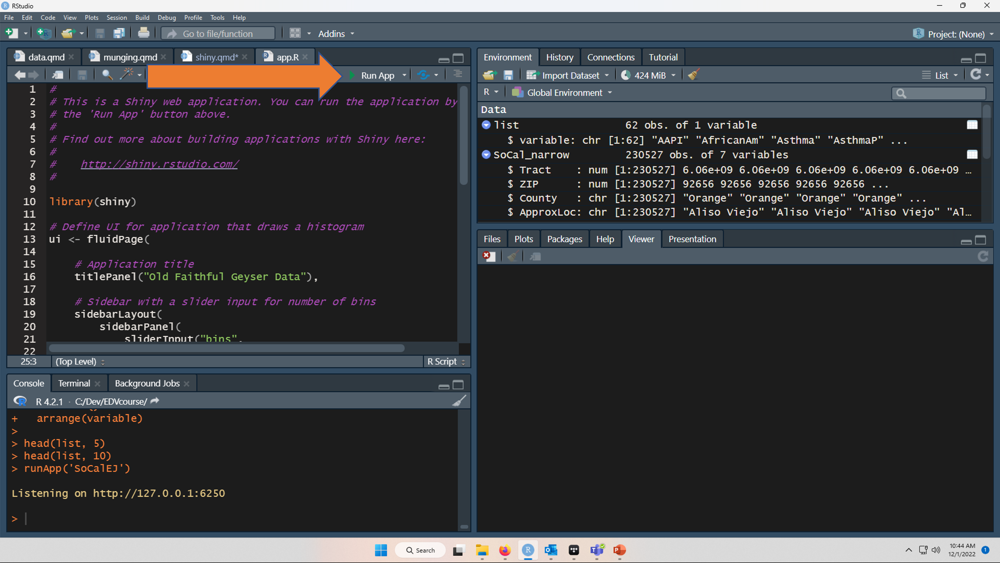
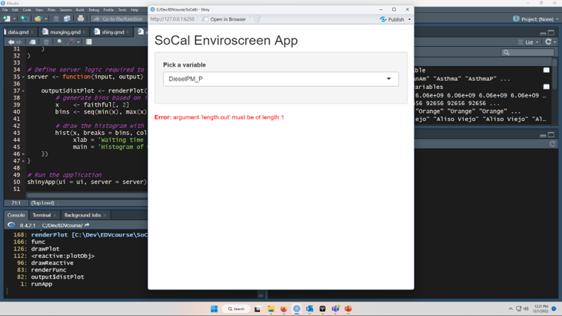

install.packages('shiny')21 Shiny Apps
Today we focus on building a shiny app
21.1 Shiny
shiny is an R package that is used to build interactive web apps. In the modern day, it is useful to be able to build visualizations that others can view on the internet(s).

I will show you how to build a simple web app using the SoCalEJ dataset today.
First, we install shiny.
Second, we restart RStudio so that the shiny template is loaded into RStudio.
Note
Close and restart RStudio!
Three, we load some libraries.
21.2 Prepare the dataset
For most apps, we want to prepare the dataset for display. While we can technically do all the import and munging in shiny within an app, it is often better to do the pre-processing of data first, as it will improve the app performance to not have to download data and munge it to make a figure.
We will acquire and tidy the SoCalEJ dataset we’ve used many times.
Acquire the data - same as in Section 9.1
URL.path <- 'https://raw.githubusercontent.com/RadicalResearchLLC/EDVcourse/main/CalEJ4/CalEJ.geoJSON'
SoCalEJ <- st_read(URL.path) %>%
st_transform("+proj=longlat +ellps=WGS84 +datum=WGS84")Reading layer `CalEJ' from data source
`https://raw.githubusercontent.com/RadicalResearchLLC/EDVcourse/main/CalEJ4/CalEJ.geoJSON'
using driver `GeoJSON'
Simple feature collection with 3747 features and 66 fields
Geometry type: MULTIPOLYGON
Dimension: XY
Bounding box: xmin: 97418.38 ymin: -577885.1 xmax: 539719.6 ymax: -236300
Projected CRS: NAD83 / California AlbersTidy the data by transforming it from a wide to a narrow dataset - much the same as in Section 11.3 - Tidy and Transform.
# select indicators and make them narrow - we remove geometry because it
# duplicates geometry in the pivot
SoCal_narrow1 <- SoCalEJ %>%
st_set_geometry(value = NULL) %>%
pivot_longer(cols = c(5:66), names_to = 'variable', values_to = 'value') %>%
filter(value >=0)
head(SoCal_narrow1, 5)# A tibble: 5 × 6
Tract ZIP County ApproxLoc variable value
<dbl> <dbl> <chr> <chr> <chr> <dbl>
1 6059062640 92656 Orange Aliso Viejo TotPop19 3741
2 6059062640 92656 Orange Aliso Viejo CIscore 9.64
3 6059062640 92656 Orange Aliso Viejo CIscoreP 12.1
4 6059062640 92656 Orange Aliso Viejo Ozone 0.0517
5 6059062640 92656 Orange Aliso Viejo OzoneP 65.4 # Select census tracts and geometry
SoCal_geometry <- SoCalEJ %>%
select(Tract, geometry)
head(SoCal_geometry, 5)Simple feature collection with 5 features and 1 field
Geometry type: MULTIPOLYGON
Dimension: XY
Bounding box: xmin: -117.874 ymin: 33.5556 xmax: -117.7157 ymax: 33.64253
Geodetic CRS: +proj=longlat +ellps=WGS84 +datum=WGS84
Tract geometry
1 6059062640 MULTIPOLYGON (((-117.7178 3...
2 6059062641 MULTIPOLYGON (((-117.7166 3...
3 6059062642 MULTIPOLYGON (((-117.8596 3...
4 6059062643 MULTIPOLYGON (((-117.7986 3...
5 6059062644 MULTIPOLYGON (((-117.8521 3...# Join narrow data and geometry again - this adds the geometry back in for the map
SoCal_narrow <- SoCal_narrow1 %>%
left_join(SoCal_geometry) %>%
#this fixes the dataset to
st_as_sf() %>%
#standard projection transformation.
st_transform("+proj=longlat +ellps=WGS84 +datum=WGS84")
head(SoCal_narrow, 5)Simple feature collection with 5 features and 6 fields
Geometry type: MULTIPOLYGON
Dimension: XY
Bounding box: xmin: -117.7306 ymin: 33.5556 xmax: -117.7163 ymax: 33.57209
Geodetic CRS: +proj=longlat +ellps=WGS84 +datum=WGS84
# A tibble: 5 × 7
Tract ZIP County ApproxLoc variable value geometry
<dbl> <dbl> <chr> <chr> <chr> <dbl> <MULTIPOLYGON [°]>
1 6059062640 92656 Orange Aliso Viejo TotPop19 3.74e+3 (((-117.7178 33.55696, -…
2 6059062640 92656 Orange Aliso Viejo CIscore 9.64e+0 (((-117.7178 33.55696, -…
3 6059062640 92656 Orange Aliso Viejo CIscoreP 1.21e+1 (((-117.7178 33.55696, -…
4 6059062640 92656 Orange Aliso Viejo Ozone 5.17e-2 (((-117.7178 33.55696, -…
5 6059062640 92656 Orange Aliso Viejo OzoneP 6.54e+1 (((-117.7178 33.55696, -…# remove interim dataframes to optimize dataset management
rm(ls = SoCal_geometry, SoCalEJ)Last data processing step is to create a list of variables and arrange them alphabetically. Use select() to keep only the variable, distinct() to keep only one instance of each variable, and arrange() to order them.
21.3 Shiny time
21.3.1 Resources on Shiny
21.3.2 Step 1 - New file - Shiny App
- Go to the File menu
- Select New File
- Select Shiny Web App…
- A window will pop up asking you to name the app - type SoCalEJ
- Press the Create button
Figure 21.1 shows where to go.
21.3.3 Step 2 - Shiny App Default Template
A new file called app.R should open. The default app.R template is a functional app.
Press Run App as shown in Figure 21.2 .

When you press the button, an App called ‘Old Faithful Geyser Data’ appears. The slider input is interactive, allowing the user to choose the number of histogram bins.
Let’s hear a Whoot if this worked for you.
Close the app (not minimize!) by pressing the STOP button in RStudio or closing the app window.
21.3.4 Step 3 - Modify the app.
We are going to change things one at a time. Debugging shiny apps is even harder than normal R code.
21.3.4.1 Change the title
Let’s change the title first. Currently it is: titlePanel("Old Faithful Geyser Data"),
Replace the existing line 16 with the new title.
titlePanel("SoCal Enviroscreen App"),
21.3.4.2 Replace sliderInput() with selectInput()
While sliderInput() is great for numbers, it is not useful for selecting categorical variables like the SoCalEJ dataset contains.
Replace code lines 21-25 with a selectInput() shown below. This creates a dropdown menu. We will design it to allow the user to select the variable of interest list$variable and the default selection DieselPM_P.
However, it will also break the figure below. That’s ok because we’re going to replace it in the next two steps.
selectInput(inputId = 'metric',
label = 'Pick a metric',
choices = list$variable,
selected = 'DieselPM_P')Figure 21.3 displays the output when running the app after this change.

21.3.4.3 Change the histogram output to SoCal_narrow1 data
Let’s make a working figure. A histogram is fine as an example, but we’ll do a ggplot following the style of Figure 11.8.
Let’s use that code chunk from Lecture 9 as the basis for our new figure. The one thing we need to do is filter() the variable based on the user input. The user selected input$metric takes the selection from the dropdown menu and reacts whenever the user picks a different option. So instead of using a filter on a named variable like DieselPM_P, we have a reactive variable which the user can modify through the dropdown menu.
We need to replace the original histogram output from lines 39-45 to our slightly modified ggplot code from Figure 11.8.
# dataset is SoCal_narrow1
SoCal_narrow1 %>%
# filter based on the input$metric
filter(variable == input$metric) %>%
#create a ggplot by county, value
ggplot(aes(x = value, fill = County)) +
geom_histogram() +
theme_bw() +
facet_wrap(~County) +
labs(x = input$metric,
y = 'Count of census tracts') This whole code chunk exists within the wrapper of output$distPlot <- renderPlot({}). That part of the code doesn’t have to change at all. That part of the code chunk tells the app to make a plot and render it in the app. The name of the plot is distPlot. The ui portion of the app on line 29 describes where it goes - in the main panel.
If this code chunk works for you, pressing Run App will generate a shiny app that has a reactive dropdown menu allowing you to create 50+ histograms. Shiny apps are amazingly powerful tools to generate the same plot N different ways.
21.3.4.4 Make it spatial with a leaflet interactive map.
Adding a map to an app is the capstone.
There’s two parts to add.
- add
leafletOutput('map')to the ui in themainPanel() - add
output$map <- renderLeaflet({CODE GOES HERE})to the server.
First, let’s do the ui part cause that is easy. On line 28 there is a code chunk that currently says mainPanel(plotOutput("distPlot)). Replace that with the code chunk below that puts in a comma and a leafletOutput('map').
mainPanel(
plotOutput("distPlot"),
leafletOutput("map")
)Next, we’ll paste in a big old code chunk to insert a leaflet map. It has four parts.
- The wrapper
- A reactive table that only includes the selected metric.
- A reactive color palette
- A leaflet map
I’m just going to show it all at once and we’ll diagram it within the app from innermost to outermost.
output$map <- renderLeaflet({
# filter geometry dataset for the user input
metricSoCal <- SoCal_narrow %>%
filter(variable == input$metric) %>%
# Create a dynamic color palette based on the metric
palM <- colorNumeric(palette = 'magma',
domain = metricSoCal$value)
#This is the map - note that the legend title is dynamic
leaflet(metricSoCal) %>%
addTiles() %>%
setView(lat = 33.8, lng = -117.60, zoom = 9) %>%
addPolygons(color = ~palM(value),
weight = 1) %>%
addLegend(pal = palM,
title = input$metric,
values = ~value)
})